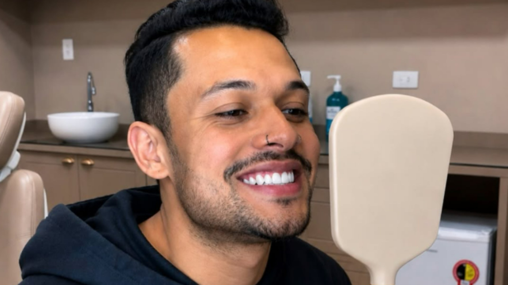

Implantes e coroas
Implantes e coroas para voltar a sorrir com segurança
Reposição de um ou mais dentes e troca de coroas antigas, com planejamento individual feito pela equipe da Cintra.
Agendar minha avaliação
 Antes
Depois
Antes
Depois
Implantes
Para quem perdeu um ou mais dentes.
O implante substitui a raiz do dente perdido e recebe uma coroa por cima. Antes, avaliamos a saúde da gengiva e do osso e planejamos o caso.
Cada boca pede um plano diferente. Na consulta explicamos o que é indicado para você.
- Avaliação da boca e exames indicados para o seu caso
- Planejamento da posição e do formato da coroa
- Etapas e prazos explicados antes de começar
Coroas
Para quem tem coroas antigas, manchadas ou que não combinam mais com o sorriso.
Troca de coroas antigas por coroas novas, com cor, formato e tamanho planejados.
Cuidamos da mordida e da aparência do sorriso, para o conjunto ficar natural.
- Avaliação das coroas atuais e da saúde dos dentes
- Planejamento da cor e do formato
- Orientação de cuidados para manter o resultado
Como funciona o tratamento com implante
As etapas e os prazos variam de pessoa para pessoa. Você conhece o seu plano antes de começar.
Avaliação e exames
Examinamos a boca e pedimos os exames indicados para o seu caso.
Planejamento
Definimos a posição do implante e o formato da coroa, e explicamos cada etapa.
Colocação do implante
O procedimento é feito com anestesia, e você sai com as orientações do pós.
Coroa e acompanhamento
Depois da cicatrização, colocamos a coroa e acompanhamos o resultado.
Dúvidas sobre implantes e coroas
Quanto tempo leva o tratamento?
Depende do caso e do tempo de cicatrização de cada pessoa. Na avaliação explicamos as etapas e os prazos do seu planejamento.
O implante dói?
O procedimento é feito com anestesia. Antes, explicamos o que esperar durante e depois, e orientamos os cuidados do pós.
Qualquer pessoa pode fazer implante?
Depende da saúde da boca, da gengiva e do osso, que avaliamos na consulta. Em alguns casos é preciso tratar algo antes.
Quanto custa?
O valor depende do seu caso e do tratamento indicado. Apresentamos o orçamento depois da avaliação.

Agende sua avaliação na Cintra
Fale com a equipe pelo WhatsApp e combine o melhor dia e horário com a Dra. Isabelle ou com a Dra. Karen.
Agendar minha avaliação Os resultados variam de acordo com cada paciente.